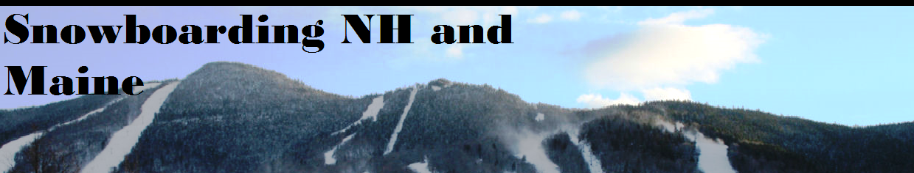

Home
Required gear
The basics
Mountains/Season passes
Contact
Sources
http://en.wikipedia.org/wiki/Snurfer history of snowboarding
http://www.thechaletatloon.com/images/coolidge12.jpg banner picture of loon that I tweaked
www.freshnessmag.com Picture of Nike boot
http://7d.blogs.com/.a/6a00d83451b91969e2014e8c28239d970d-800wi Picture of Jake Burton
http://www.mashf.com/Snurfer%20RS.jpg Snurfer picture
http://www.the-house.com/oa9crwthrmfi13zz-oakley-snowboard-goggles.html?cagpspn=pla&gclid=CMH0ufeOkbcCFUWo4AodpxMAqg Snowboarding goggles
http://ecx.images-amazon.com/images/I/4124cEylihL._SY300_.jpg snowboard helmet
http://simplyfitnessgear.com/blog/wp-content/uploads/2010/10/Polypropylene-Thermal-Underwear-230x300.jpg underlayer
http://0.tqn.com/d/snowboarding/1/0/S/1/-/-/BurtonGoreTexGlove.jpg gloves
http://cdn.snowboardermag.com/files/2010/07/Nike-Kampai-Snowboard-Jacket.jpg jacket
http://images.tightboards.com/sb-annex-pnts-blkout-12-prod.jpg snowboard pants
http://www.meinsportline.de/media/catalog/product/b/u/burton-snowboard-custom-restricted-1a.jpg Board
http://astro.temple.edu/~tua24268/images/binding3.jpg Bindings
http://www.youtube.com/watch?v=kGpGC1l7il0&list=PL1593C2068A3D4D7F This is a video playlist that I used for my videos
http://www.newenglandpass.com/newenglandpasses.html New England Season passes-scroll to college section
http://www.cannonmt.com/4_nh_college_pass.html 4NH college pass
http://www.patspeak.com/winter/lift_rate.html PatsPeak
http://www.mcintyreskiarea.com/ McIntyre
Top of Page
Developed by:
Zachary Dudek
Copyright © 2013 Zachary Dudek
Home
Required gear
The basics
Mountains/Season passes
Contact
Sources
Back to Class Index